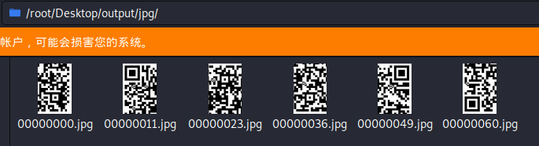
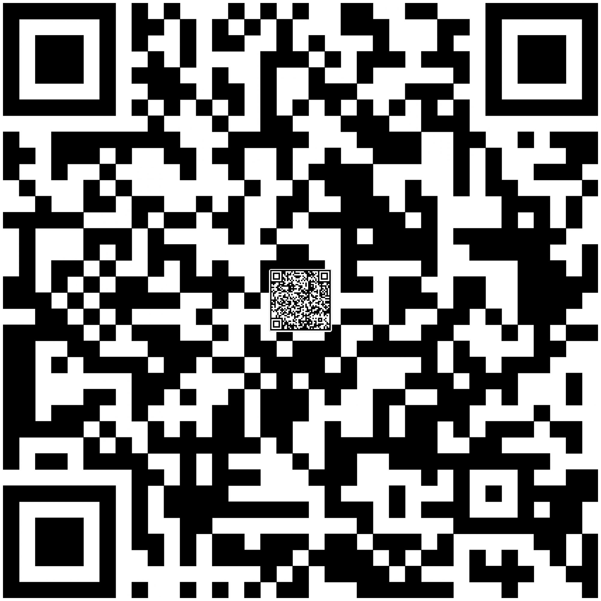

043 奇怪的TTL字段
我们截获了一些IP数据报，发现报文头中的TTL值特别可疑，怀疑是通信方嵌入了数据到TTL，我们将这些TTL值提取了出来，你能看出什么端倪吗？
下载得到ttl.txt，内容为大量TTL值：
TTL=127
TTL=191
TTL=127
TTL=191
TTL=127
TTL=191
TTL=127
TTL=191
TTL=127
TTL=191
TTL=127
TTL=63
TTL=63
TTL=255
TTL=191
TTL=63
...
首先注意到整段文件只有四种TTL值：63、127、191、255。
转换为十六进制：0x00111111、0x01111111、0x10111111、0x11111111。
只有最前两位不同，尝试一下提取前16行的最前两位：
01100110 01100110 01100100 00111000
ASCII转码：
FF D8
是jpeg格式文件头。写个脚本处理一下：
file = open('C:/Users/Administrator/Desktop/ttl.txt', 'r')
line = file.readlines()
a = []
for i in line:
a.append(int(i[4:]))
b = ''
for i in a:
if i == 63:
b += '00'
if i == 127:
b += '01'
if i == 191:
b += '10'
if i == 255:
b += '11'
print(b)
import binascii
flag = ''
for i in range(0, len(b), 8):
flag += chr(int(b[i : i+8], 2))
flag = binascii.unhexlify(flag)
print(flag)
img = open('C:/Users/Administrator/Desktop/flag.jpg', 'wb')
img.write(flag)
img.close()
得到图片：

是二维码的一部分，十六进制编辑器打开会发现文件中有多个jpeg文件头，foremost分离。

最后拼起来得到完整二维码。

扫码：
key:AutomaticKey cipher:fftu{2028mb39927wn1f96o6e12z03j58002p}
用autokey在线解密（和维吉尼亚有点类似但不完全一样）：

flag：flag{2028ab39927df1d96e6a12b03e58002e}
044 2-1
下载得到png文件，十六进制查看开头为80 59 4E 47，修复为89 50，但图片仍然打不开，这是因为文件头部数据出现问题导致CRC验证无法通过。

* （固定）八个字节89 50 4E 47 0D 0A 1A 0A为png的文件头
* （固定）四个字节00 00 00 0D（即为十进制的13）代表数据块的长度为13
* （固定）四个字节49 48 44 52（即为ASCII码的IHDR）是文件头数据块的标示（IDCH）
* （可变）13位数据块（IHDR)
* 前四个字节代表该图片的宽
* 后四个字节代表该图片的高
* 后五个字节依次为： Bit depth、ColorType、Compression method、Filter method、Interlace method

可以看出这个图片的宽度显示为0，显然有问题。用python脚本爆破正确的宽度：
import struct
import binascii
m = open('C:/Users/Administrator/Desktop/1.png', 'rb').read()
for i in range(1024):
c = m[12 : 16] + struct.pack('>i', i) + m[20 : 29]
crc = binascii.crc32(c) & 0xffffffff
if crc == 0x932f8a6b:
print(i)
结果为709=0x2C5，十六进制编辑器中修改图片宽度，修复完成。

flag：wdflag{Png_C2c_u_kn0W}
045 互相伤害!!!
下载得到无后缀名的文件，file命令确定文件类型。
root@kali:~/Desktop# file 6388679263e2e624b3c29e4671f6dc
6388679263e2e624b3c29e4671f6dc: pcapng capture file - version 1.0
binwalk或foremost均能发现数据包中存在多张图片。利用wireshark导出HTTP对象，将图片全部保存。


首先注意到如下图片。
二维码扫描得到：
U2FsdGVkX1+VpmdLwwhbyNU80MDlK+8t61sewce2qCVztitDMKpQ4fUl5nsAZOI7bE9uL8lW/KLfbs33aC1XXw==
根据提示用CTF为密钥进行AES解密，得到：
668b13e0b0fc0944daf4c223b9831e49
接下来十六进制编辑器查看每张图片，发现末尾均藏有zip压缩包。但解压得到的均是无效信息二维码。
只有上述这张能够提取得到一个加密zip压缩包。用上述AES解密结果作为密码解压得到二维码。

发现其中心位置有小二维码，扫码得到flag。
flag：flag{97d1-0867-2dc1-8926-144c-bc8a-4d4a-3758}
046 我们的秘密是绿色的
下载得到我们的秘密是green.jpg。根据题名提示，用oursecret隐写软件。密码是图片中的绿色数字，即0405111218192526。

得到try.zip。

既然密码是生日那么就暴力破解。先生成字典。


解压得到flag.zip。

用上一步得到的readme.txt，明文破解。

解压得到又一个flag.zip，这次是伪加密，ZipCenOp.jar处理即可。解压得到flag.txt：
qddpqwnpcplen%prqwn_{_zz*d@gq}
大括号的位置比较可疑。试一下CTF-tools这款工具进行栅栏密码爆破，找到比较可疑的结果：

qwlr{ddneq_@dpnwzgpc%nzqqpp_*}
下一步是凯撒爆破：

flag：flag{ssctf_@seclover%coffee_*}
047 隐藏的信息
下载得到message.txt，内容：
0126 062 0126 0163 0142 0103 0102 0153 0142 062 065 0154 0111 0121 0157 0113 0111 0105 0132 0163 0131 0127 0143 066 0111 0105 0154 0124 0121 060 0116 067 0124 0152 0102 0146 0115 0107 065 0154 0130 062 0116 0150 0142 0154 071 0172 0144 0104 0102 0167 0130 063 0153 0167 0144 0130 060 0113
八进制ASCII转码得到：
V2VsbCBkb25lIQoKIEZsYWc6IElTQ0N7TjBfMG5lX2Nhbl9zdDBwX3kwdX0K
base64解码得到：
Well done!
Flag: ISCC{N0_0ne_can_st0p_y0u}
大哥这是Crypto题吧。
flag：ISCC{N0_0ne_can_st0p_y0u}
048 Become_a_Rockstar
下载得到Become_a_Rockstar.rock，是个txt文本，内容：
Leonard Adleman says star
Problem Makers is Problem Makers
Problem Makers says NCTF{
God takes World
A boy says flag
The boy is Bob
Evil takes your mind
A girl says no flag
The girl is Alice
Truths were ctf hoster violently FUCK
Bob says ar
Adi Shamir says rock
Love takes Alice and Bob
Mallory was a eavesdroppers
Mallory's in hell
Everything is literatures, potentially flag, Earth, description, soul
Alice says you
Reality takes God and Evil
God was in heaven
Evil is in the world
Ron Rivest says nice
You Want To takes Alice and Love and Anything
You's Loser. Without Alice, Love or Anything
Listen to your heart
You were Loser
Listen to your mind
Nothing was psb unfulfilled
If Truths of Nothing is Everything
Put Ron Rivest with Adi Shamir with Leonard Adleman into RSA
If Everything over Nothing is Truths
Put Problem Makers with Alice into Problem Makers with Bob
Say Problem Makers
The flag is in your heart
The confusion is in your mind
Shout RSA
Mysterious One says }
Whisper Mysterious One
This is live
This is the truth
This is reality
This is art
This is CTF
This is NOT program
看起来像是歌词，但有多个词语是重复出现的，且有says、is、takes等动词连接，有If语句，看起来很像是门程序语言。搜索发现Rockstar编程语言（github）。
根据这个页面的说明将其转成Python：
Leonard_Adleman = "star"
Problem_Makers = 76
Problem_Makers = "NCTF{"
def God(World):
a_boy = "flag"
the_boy = 3
def Evil(your_mind):
a_girl = "no flag"
the_girl = 5
Truths = 3694
Bob = "ar"
Adi_Shamir = "rock"
def Love(Alice, Bob):
Mallory = 13
Mallory = 24
Everything = 114514
Alice = "you"
def Reality(God, Evil):
God = 26
Evil = 235
Ron_Rivest = "nice"
def You_Want_To(Alice, Love, Anything):
You = 5.75428
your_heart = input()
You = 5
your_mind = input()
Nothing = 31
if Truths * Nothing == Everything:
Rsa = Ron_Rivest + Adi_Shamir + Leonard_Adleman
if Everything / Nothing == Truths:
Problem_Makers = Problem_Makers + Alice + Bob
print(Problem_Makers)
the_flag = 245
the_confusion = 244
print(Rsa)
Mysterious_One = "}"
print(Mysterious_One)
This = 4
This = 35
This = 7
This = 3
This = 3
This = 37
跑一遍得到flag。
NCTF{youar
nicerockstar
}
flag：NCTF{youarnicerockstar}